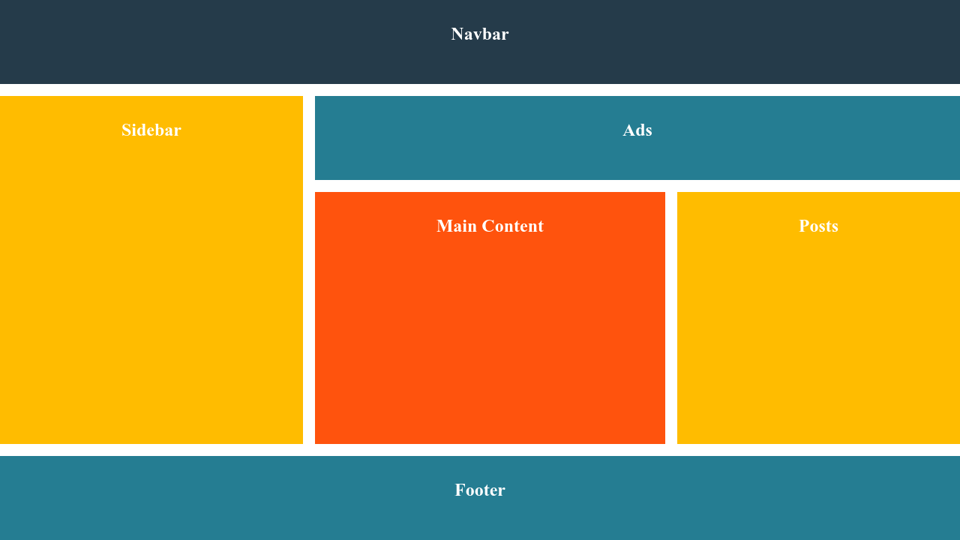

que es el flexbox
El Módulo de Caja Flexible, comúnmente llamado flexbox, fue diseñado como un modelo unidimensional de layout, y como un método que pueda ayudar a distribuir el espacio entre los ítems de una interfaz y mejorar las capacidades de alineación.  imagen de cajas posicionadas
Para este trabajo decidi usar los flexbox o cajas flexibles donde lleve a cabo un layout principal en el cual se trabajara por medio de este sin embargo abra cierto contenido extra el cual se vera reflejado en las otras pag de este mismo trabajo. video del layout